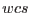
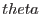

subroutine getThetaPhiMaps(wcs, scAttitude, timeStamp, thetaMap, phiMap)
type(WcsT), intent(in) :: wcs
type(SpacecraftAttitudeType), intent(in) :: scAttitude
real(double), intent(in) :: timeStamp
real(double), intent(out) :: thetaMap(:,:),&
phiMap(size(thetaMap,1)&
, size(thetaMap,2))
end subroutine getThetaPhiMaps
This subroutine returns two arrays in the sky image coordinate system defined by the WCS structure : one containing the  and the other the  value at that pixel; and
value at that pixel; and  being the instrument-mirror-centric TELCOORD-system polar coordinates.
being the instrument-mirror-centric TELCOORD-system polar coordinates.